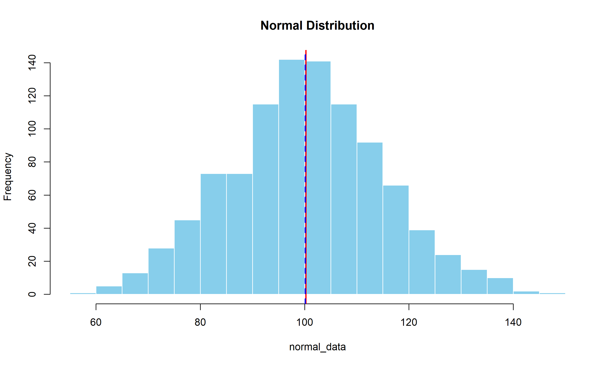
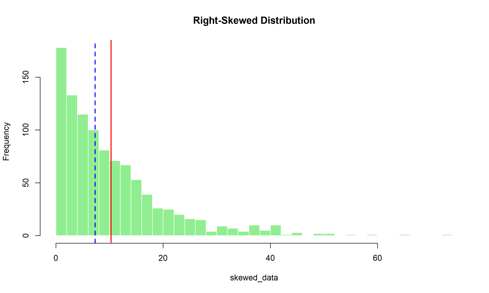
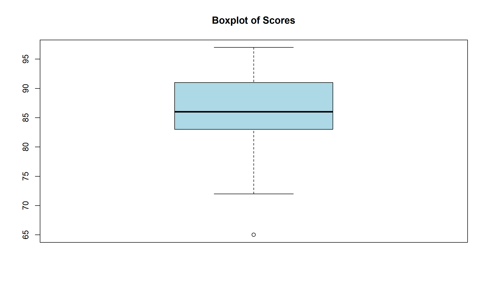
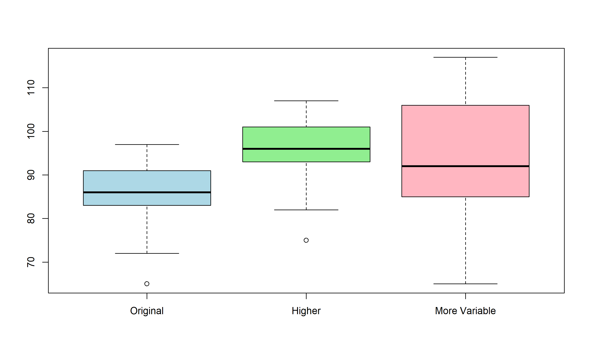
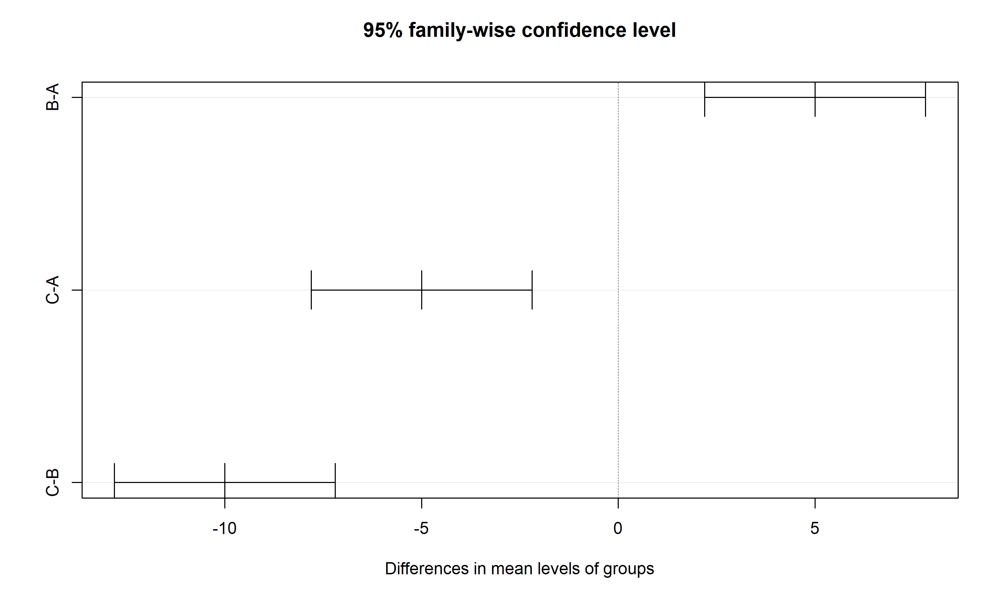

R is a programming language and free software environment for statistical computing and graphics.
RStudio is an integrated development environment (IDE) for R.
.exe file and follow the
installation promptsNote: It’s best to accept the default settings during installation.
.pkg file that matches your macOS
versionFor Ubuntu/Debian:
For Fedora/RHEL:
After installing R, install RStudio:
Tip: RStudio will automatically detect your R installation.
When you open RStudio, you’ll see four main panels:
Note: If you don’t see all panels, you can adjust the layout in View > Panes.
Let’s verify your installation by running a simple command:
Press Enter to execute the command
You should see information about your R version
If you see the version information, congratulations! R and RStudio are installed correctly.
R.versiongetwd()help(mean)print("Hello, R World!")If you completed the exercises, you should have:
R.version showed your R version informationgetwd() showed your current working directoryhelp(mean) opened the help documentation for the mean
function[1] "Hello, R World!"Let’s explore the four main panels in more detail:
There are two primary ways to work with R code:
Tip: Use the console for quick tests and scripts for work you’ll want to revisit.
To create a new R script:
Note: Save your scripts with meaningful names in an organized folder structure.
The working directory is the default location where R will: - Look for files you want to load - Save files you generate
To check your current working directory:
## [1] "C:/Users/basim/OneDrive/Documents/GitHub/R_course_apr2025"To set your working directory:
In RStudio: - Use Session > Set Working Directory - Or use the Files panel to navigate and then More > Set As Working Directory
RStudio Projects make it easier to organize your work:
To create a new project: 1. Click File > New Project 2. Choose project type (New Directory, Existing Directory, Version Control) 3. Follow the wizard to set up your project
Tip: Use one project per analysis or data task.
R’s functionality can be extended with packages:
# Install a single package
install.packages("dplyr")
# Install multiple packages
install.packages(c("ggplot2", "tidyr", "readxl"))Note: You only need to install packages once, but you need to load them in each new R session.
When you’re stuck, R has built-in help:
# Get help for a specific function
?mean
help(mean)
# Search help for a term
??regression
# Get example usage
example(mean)Additional resources: - Cheatsheets: Help > Cheatsheets in RStudio - Stack Overflow: For specific coding questions - R-bloggers: For tutorials and tips - R Documentation: Official R documentation
Create a new RStudio Project called “R_Workshop”.
Inside this project, create a new R script called “my_first_script.R”.
Add the following code to your script:
Save the script and run it.
Install and load the dplyr package.
Use the help function to learn about the filter()
function in dplyr.
# In the console:
# 1. Create new project: File > New Project > New Directory > New Project
# 2. Create new script: File > New File > R Script
# 3. Add code to the script:
# My first R script
print("Learning R is fun!")
# Create a variable
my_number <- 42
# Display the variable
print(my_number)
# 4. Save script (Ctrl+S) and run (Ctrl+Shift+Enter or Source button)
# 5. Install and load dplyr:
install.packages("dplyr")
library(dplyr)
# 6. Get help for filter function:
?dplyr::filterR can be used as a powerful calculator. Type an expression and hit Enter.
## [1] 8## [1] 3## [1] 24## [1] 5## [1] 8R follows the standard mathematical order of operations (PEMDAS): - Parentheses - Exponents - Multiplication and Division (from left to right) - Addition and Subtraction (from left to right)
## [1] 11## [1] 14## [1] 4## [1] 42## [1] 2.302585## [1] 2## [1] 3## [1] 1## [1] -1## [1] 1Variables let you store values for later use. Use the assignment
operator <- to create variables.
## [1] 15## [1] 50## [1] 2## [1] 15Tip: Use <- for assignment and
= for specifying function arguments.
Good variable names make your code more readable and easier to understand.
# Valid variable names
my_variable <- 10
myVariable <- 20
my.variable <- 30
variable1 <- 40
# Print a variable's value
my_variable## [1] 10While many naming styles are valid, consistency is key. Choose one style and stick with it.
# Common naming styles:
# snake_case (recommended for R)
first_name <- "John"
# camelCase
firstName <- "John"
# PascalCase
FirstName <- "John"
# dot.case (less common in modern R)
first.name <- "John"Note: The tidyverse style guide recommends snake_case for variable and function names.
R has several data types for representing different kinds of values.
# Integers and doubles are both numeric
a <- 10 # This is actually stored as a double
b <- 10.5
# Check the type
class(a)## [1] "numeric"## [1] "numeric"## [1] "integer"# Create character strings with quotes
name <- "Alice"
greeting <- 'Hello, world!'
# Check the type
class(name)## [1] "character"## [1] "Hello there"## [1] "RStudio"## [1] 11## [1] "logical"## [1] TRUE## [1] TRUE## [1] FALSEComparison operators return logical values (TRUE or FALSE).
## [1] TRUE## [1] TRUE## [1] TRUE## [1] TRUE## [1] TRUE## [1] TRUEVectors are one-dimensional collections of values of the same type.
# Create a vector with c()
numbers <- c(2, 4, 6, 8, 10)
fruits <- c("apple", "banana", "cherry")
logicals <- c(TRUE, FALSE, TRUE, TRUE)
# Check the type
class(numbers)## [1] "numeric"## [1] "character"## [1] 5## [1] 2## [1] "banana"## [1] 2 6Operations on vectors are applied to each element.
## [1] 15 25 35 45 55## [1] 20 40 60 80 100## [1] 11 22 33## [1] 10 40 90Try these exercises in RStudio:
height and width with
values 7 and 5.# 1. Create variables height and width
height <- 7
width <- 5
# 2. Calculate the area of a rectangle
area <- height * width
area## [1] 35# 3. Create a vector of the first 10 even numbers
even_numbers <- c(2, 4, 6, 8, 10, 12, 14, 16, 18, 20)
# Alternative: even_numbers <- seq(2, 20, by=2)
# 4. Calculate mean, min, and max
mean(even_numbers)## [1] 11## [1] 2## [1] 20## [1] FALSE FALSE FALSE FALSE FALSE TRUE TRUE
## [8] TRUE TRUE TRUEWorking with your own data is one of the most common tasks in R:
Note: Before importing data, make sure you understand its structure.
For this section, we’ll need a few packages:
# Install packages (you only need to do this once)
install.packages(c("readr", "readxl", "writexl"))
# Load packages (do this in each new R session)
library(readr) # For working with CSV files
library(readxl) # For reading Excel files
library(writexl) # For writing Excel filesTip: The tidyverse collection of packages includes readr and many other useful data handling packages.
CSV (Comma-Separated Values) files are a common format for data exchange.
# Using base R
data_base <- read.csv("data.csv")
# Using readr (faster and more consistent)
data_readr <- read_csv("data.csv")Key arguments for read_csv(): - file: Path
to the file - col_names: TRUE if first row contains column
names - na: String(s) to interpret as missing values -
skip: Number of lines to skip - n_max: Maximum
number of rows to read
Not all CSV files use commas as separators:
# Tab-delimited files
data_tabs <- read_tsv("data.tsv")
# Files with other delimiters
data_semicolon <- read_delim("data.txt", delim = ";")
data_pipe <- read_delim("data.txt", delim = "|")
# Let readr guess the delimiter
data_guess <- read_delim("data.txt", delim = NULL)Note: European data often uses semicolons instead of commas as the delimiter.
After importing data, you should examine it:
Excel files can be read using the readxl package:
# Read the first sheet
data_excel <- read_excel("data.xlsx")
# Read a specific sheet by name
data_sheet2 <- read_excel("data.xlsx", sheet = "Sheet2")
# Read a specific sheet by index
data_sheet3 <- read_excel("data.xlsx", sheet = 3)
# Specify a cell range
data_range <- read_excel("data.xlsx", range = "A1:D100")Tip: Use excel_sheets(“data.xlsx”) to
list all sheet names in an Excel file.
After processing data, you can export it back to CSV:
# Create a sample data frame
my_data <- data.frame(
id = 1:5,
name = c("Alice", "Bob", "Charlie", "David", "Eve"),
score = c(85, 92, 78, 95, 88)
)
# Export to CSV using base R
write.csv(my_data, "output_base.csv", row.names = FALSE)
# Export using readr (faster and more consistent)
write_csv(my_data, "output_readr.csv")Note: Setting row.names = FALSE
prevents an extra column with row numbers.
Use the writexl package to export to Excel:
# Export a single data frame to Excel
write_xlsx(my_data, "output.xlsx")
# Export multiple data frames as separate sheets
data_list <- list(
Students = my_data,
Courses = data.frame(
course_id = 1:3,
course_name = c("Math", "Science", "History")
)
)
write_xlsx(data_list, "output_multiple_sheets.xlsx")CSV files often have issues that need special handling:
# Files with non-standard encodings
data_encoded <- read_csv("data.csv", locale = locale(encoding = "Latin1"))
# Files with unusual date formats
data_dates <- read_csv("data.csv",
col_types = cols(date = col_date(format = "%d/%m/%Y")))
# Files with quoted fields
data_quoted <- read_csv("data.csv", quote = "'")
# Dealing with comment characters
data_with_comments <- read_csv("data.csv", comment = "#")RStudio provides a graphical interface for importing data:
The interface will also generate the R code needed to reproduce the import.
Tip: This is a great way to learn the right parameters for importing tricky files.
Create a simple data frame in R:
Export this data frame to:
Import both files back into R with different variable names.
Verify that the imported data matches the original data.
# 1. Create the data frame
students <- data.frame(
id = 1:5,
name = c("Alice", "Bob", "Charlie", "David", "Eve"),
grade = c("A", "B+", "B", "A-", "B+"),
score = c(95, 87, 82, 91, 85)
)
# 2. Export to CSV and Excel
library(readr)
library(writexl)
write_csv(students, "students.csv")
write_xlsx(students, "students.xlsx")
# 3. Import back with different names
students_csv <- read_csv("students.csv")
library(readxl)
students_excel <- read_excel("students.xlsx")
# 4. Verify the data matches
head(students)
head(students_csv)
head(students_excel)
# Check if all are identical
all.equal(students, students_csv)
all.equal(students, students_excel)R can read data from many sources:
Note: Different sources require different approaches and packages.
R comes with several built-in datasets for learning and testing:
# List all available datasets
data()
# Load a specific dataset
data(mtcars)
# Examine the dataset
head(mtcars)## mpg cyl disp hp drat wt
## Mazda RX4 21.0 6 160 110 3.90 2.620
## Mazda RX4 Wag 21.0 6 160 110 3.90 2.875
## Datsun 710 22.8 4 108 93 3.85 2.320
## Hornet 4 Drive 21.4 6 258 110 3.08 3.215
## Hornet Sportabout 18.7 8 360 175 3.15 3.440
## Valiant 18.1 6 225 105 2.76 3.460
## qsec vs am gear carb
## Mazda RX4 16.46 0 1 4 4
## Mazda RX4 Wag 17.02 0 1 4 4
## Datsun 710 18.61 1 1 4 1
## Hornet 4 Drive 19.44 1 0 3 1
## Hornet Sportabout 17.02 0 0 3 2
## Valiant 20.22 1 0 3 1## 'data.frame': 32 obs. of 11 variables:
## $ mpg : num 21 21 22.8 21.4 18.7 18.1 14.3 24.4 22.8 19.2 ...
## $ cyl : num 6 6 4 6 8 6 8 4 4 6 ...
## $ disp: num 160 160 108 258 360 ...
## $ hp : num 110 110 93 110 175 105 245 62 95 123 ...
## $ drat: num 3.9 3.9 3.85 3.08 3.15 2.76 3.21 3.69 3.92 3.92 ...
## $ wt : num 2.62 2.88 2.32 3.21 3.44 ...
## $ qsec: num 16.5 17 18.6 19.4 17 ...
## $ vs : num 0 0 1 1 0 1 0 1 1 1 ...
## $ am : num 1 1 1 0 0 0 0 0 0 0 ...
## $ gear: num 4 4 4 3 3 3 3 4 4 4 ...
## $ carb: num 4 4 1 1 2 1 4 2 2 4 ...Tip: Use ?mtcars to get documentation
about a built-in dataset.
Different file formats require different functions and packages:
# CSV files (we've seen this already)
library(readr)
df_csv <- read_csv("data.csv")
# Tab-delimited text
df_tab <- read_tsv("data.txt")
# Fixed-width files
df_fixed <- read_fwf("data.txt",
widths = c(10, 5, 20, 15),
col_names = c("name", "id", "address", "phone"))
# JSON files
library(jsonlite)
df_json <- fromJSON("data.json")To connect to databases, you’ll need specific packages:
# SQL databases with DBI and a backend driver
library(DBI)
library(RSQLite) # For SQLite databases
# Connect to a SQLite database
con <- dbConnect(RSQLite::SQLite(), "my_database.sqlite")
# Read data from a table
df_sql <- dbReadTable(con, "my_table")
# Run a SQL query
df_query <- dbGetQuery(con, "SELECT * FROM my_table WHERE value > 100")
# Always disconnect when done
dbDisconnect(con)R can fetch data directly from the web:
# Download a CSV file from the web
url <- "https://data.example.com/dataset.csv"
df_web <- read_csv(url)
# Web APIs often return JSON data
library(httr)
library(jsonlite)
response <- GET("https://api.example.com/data")
data <- fromJSON(content(response, "text"))
# Convert to a data frame if needed
df_api <- as.data.frame(data)The haven package can read data from other statistical
software:
library(haven)
# Read SPSS data
df_spss <- read_spss("data.sav")
# Read SAS data
df_sas <- read_sas("data.sas7bdat")
# Read Stata data
df_stata <- read_dta("data.dta")Note: These functions preserve variable labels and value labels from the original files.
After importing, check the structure to ensure proper data types:
# Basic structure
str(df)
# Column types
sapply(df, class)
# Summary statistics
summary(df)
# Number of missing values per column
colSums(is.na(df))Tip: Always inspect your data after importing to catch any issues early.
Often you’ll need to convert columns to different data types:
# Convert a character to numeric
df$numeric_column <- as.numeric(df$character_column)
# Convert a character to factor (categorical)
df$factor_column <- as.factor(df$character_column)
# Convert to date
library(lubridate)
df$date_column <- ymd(df$character_date) # Year-Month-Day format
# Multiple conversions with dplyr
library(dplyr)
df <- df %>%
mutate(
num_col = as.numeric(char_col),
factor_col = as.factor(category_col),
date_col = ymd(date_string)
)You’ll often need to work with subsets of your data:
# Create a sample data frame
df <- data.frame(
id = 1:6,
gender = c("M", "F", "F", "M", "M", "F"),
score = c(85, 92, 78, 95, 88, 72)
)
# Subset rows by condition (base R)
males <- df[df$gender == "M", ]
high_scores <- df[df$score > 85, ]
# Subset using dplyr
library(dplyr)
males_dplyr <- filter(df, gender == "M")
high_scores_dplyr <- filter(df, score > 85)
# Select specific columns
names_scores <- df[, c("id", "score")]
# Select using dplyr
names_scores_dplyr <- select(df, id, score)Load the built-in iris dataset:
Explore the dataset:
Create a subset of the data containing only the setosa species.
Create a CSV file from this subset, then read it back into R.
# 1. Load the dataset
data(iris)
# 2. Explore the dataset
# Check structure
str(iris)
# View first few rows
head(iris)
# Get summary statistics
summary(iris)
# Count species
table(iris$Species)
# 3. Create a subset for setosa
setosa <- iris[iris$Species == "setosa", ]
# Or with dplyr:
library(dplyr)
setosa_dplyr <- filter(iris, Species == "setosa")
# 4. Write to CSV and read back
write.csv(setosa, "setosa.csv", row.names = FALSE)
setosa_read <- read.csv("setosa.csv")
# Verify
head(setosa_read)Data cleaning (or data wrangling) is a crucial step in any data analysis:
Note: Data cleaning often takes 60-80% of the time in a data analysis project!
These are the most common data cleaning operations:
We’ll use these packages for data cleaning:
# Install packages (one-time step)
install.packages(c("tidyr", "dplyr", "stringr", "lubridate"))
# Load packages
library(tidyr) # For tidying data
library(dplyr) # For data manipulation
library(stringr) # For string operations
library(lubridate) # For date manipulationTip: These packages are all part of the tidyverse collection.
Identifying and addressing missing values is a critical step:
# Create a data frame with missing values
df <- data.frame(
id = 1:5,
name = c("Alice", "Bob", NA, "David", "Eve"),
score = c(85, NA, 78, 95, NA)
)
# Count missing values per column
colSums(is.na(df))## id name score
## 0 1 2# Using tidyr and dplyr
library(tidyr)
library(dplyr)
# Replace NA with specific value
df_filled <- df %>%
mutate(
name = ifelse(is.na(name), "Unknown", name),
score = ifelse(is.na(score), 0, score)
)
# Fill with previous or next non-missing value
df_filled <- df %>%
fill(name, .direction = "down") %>% # Fill NAs with previous value
fill(score, .direction = "up") # Fill NAs with next value
# Replace with mean (for numeric data)
df_mean <- df %>%
mutate(score = ifelse(is.na(score), mean(score, na.rm = TRUE), score))Duplicate records can skew your analysis:
# Create data with duplicates
df_dup <- data.frame(
id = c(1, 2, 2, 3, 4, 4),
value = c(10, 20, 20, 30, 40, 40)
)
# Find duplicates
duplicated(df_dup)## [1] FALSE FALSE TRUE FALSE FALSE TRUE## [1] 2Inconsistent text data is a common problem:
# Create data with inconsistent text
df_text <- data.frame(
id = 1:5,
category = c("Electronics", "electronics", "ELECTRONICS", "Electronic", "electronic")
)
# Convert to lowercase
df_text$category <- tolower(df_text$category)
# Using stringr for more complex text cleaning
library(stringr)
# Trim whitespace
df_text$category <- str_trim(df_text$category)
# Replace patterns
df_text$category <- str_replace(df_text$category, "electronic", "electronics")Dates often come in different formats:
# Create data with inconsistent dates
df_dates <- data.frame(
id = 1:4,
date = c("2023-01-15", "01/15/2023", "15-Jan-2023", "January 15, 2023")
)
# Convert to consistent date format using lubridate
library(lubridate)
# Create a new standardized date column
df_dates <- df_dates %>%
mutate(
date_std = case_when(
str_detect(date, "\\d{4}-\\d{2}-\\d{2}") ~ ymd(date),
str_detect(date, "\\d{2}/\\d{2}/\\d{4}") ~ mdy(date),
str_detect(date, "\\d{2}-\\w{3}-\\d{4}") ~ dmy(date),
TRUE ~ mdy(date)
)
)Outliers can significantly impact your analysis:
# Create data with outliers
set.seed(123)
normal_values <- rnorm(99, mean = 100, sd = 10)
outliers <- c(50, 150)
data_with_outliers <- c(normal_values, outliers)
# Identify outliers using IQR method
q1 <- quantile(data_with_outliers, 0.25)
q3 <- quantile(data_with_outliers, 0.75)
iqr <- q3 - q1
lower_bound <- q1 - 1.5 * iqr
upper_bound <- q3 + 1.5 * iqr
# Find outliers
outliers <- data_with_outliers < lower_bound | data_with_outliers > upper_bound
sum(outliers)## [1] 3Clear column names improve code readability:
# Data with unclear column names
df_names <- data.frame(
ID = 1:3,
F.Name = c("John", "Alice", "Bob"),
L.Name = c("Smith", "Johnson", "Brown"),
DOB = c("1990-05-15", "1985-11-30", "1992-08-22")
)
# Rename columns with base R
# names(df_names) <- c("id", "first_name", "last_name", "birth_date")
# Using dplyr
library(dplyr)
df_renamed <- df_names %>%
rename(
id = ID,
first_name = F.Name,
last_name = L.Name,
birth_date = DOB
)Derived fields can provide new insights:
# Create sample data
df_calc <- data.frame(
id = 1:3,
first_name = c("John", "Alice", "Bob"),
last_name = c("Smith", "Johnson", "Brown"),
birth_date = c("1990-05-15", "1985-11-30", "1992-08-22"),
height_cm = c(175, 162, 180),
weight_kg = c(75, 58, 85)
)
# Create calculated fields
df_calc <- df_calc %>%
mutate(
full_name = paste(first_name, last_name),
birth_date = lubridate::ymd(birth_date),
age = floor(as.numeric(difftime(Sys.Date(), birth_date, units = "days")) / 365.25),
bmi = weight_kg / ((height_cm / 100)^2),
weight_status = case_when(
bmi < 18.5 ~ "Underweight",
bmi < 25 ~ "Normal",
bmi < 30 ~ "Overweight",
TRUE ~ "Obese"
)
)Data often needs to be reshaped for analysis:
# Wide format data
df_wide <- data.frame(
id = 1:3,
name = c("Alice", "Bob", "Charlie"),
math = c(85, 92, 78),
science = c(92, 85, 90),
history = c(78, 88, 95)
)
# Convert to long format
library(tidyr)
df_long <- df_wide %>%
pivot_longer(
cols = c(math, science, history),
names_to = "subject",
values_to = "score"
)Sometimes we need to go from long to wide format:
# Long format data
df_long <- data.frame(
id = rep(1:3, each = 3),
name = rep(c("Alice", "Bob", "Charlie"), each = 3),
subject = rep(c("math", "science", "history"), 3),
score = c(85, 92, 78, 92, 85, 90, 78, 88, 95)
)
# Convert to wide format
df_wide <- df_long %>%
pivot_wider(
names_from = subject,
values_from = score
)A typical data cleaning workflow includes:
Tip: Document your cleaning steps to ensure reproducibility.
Use the following data for this exercise:
# Create a messy dataset
messy_data <- data.frame(
ID = c(1, 2, 2, 3, 4, 5),
Name = c("john smith", "JANE DOE", "Jane Doe", "Bob", NA, "Alice"),
Age = c(25, 30, 30, NA, 40, "thirty-five"),
Income = c("$45,000", "$60K", "$60,000", NA, "$55,000", "$48000"),
Date = c("2023-01-15", "01/15/2023", "01/15/2023", "Feb 15, 2023", NA, "2023-02-20")
)Clean this data: 1. Remove duplicates 2. Handle missing values 3. Standardize names (proper case) 4. Convert Age to numeric 5. Clean and standardize Income 6. Convert Date to a consistent format
# Create the messy dataset
messy_data <- data.frame(
ID = c(1, 2, 2, 3, 4, 5),
Name = c("john smith", "JANE DOE", "Jane Doe", "Bob", NA, "Alice"),
Age = c(25, 30, 30, NA, 40, "thirty-five"),
Income = c("$45,000", "$60K", "$60,000", NA, "$55,000", "$48000"),
Date = c("2023-01-15", "01/15/2023", "01/15/2023", "Feb 15, 2023", NA, "2023-02-20"),
stringsAsFactors = FALSE
)
# Load required packages
library(dplyr)
library(tidyr)
library(stringr)
library(lubridate)
# Clean the data
clean_data <- messy_data %>%
# Remove duplicates
distinct() %>%
# Handle missing values
mutate(
Name = ifelse(is.na(Name), "Unknown", Name),
# Standardize names (proper case)
Name = str_to_title(Name),
# Clean and convert Age to numeric
Age = case_when(
Age == "thirty-five" ~ "35",
TRUE ~ as.character(Age)
),
Age = as.numeric(Age),
# Fill missing Age with mean
Age = ifelse(is.na(Age), mean(as.numeric(Age), na.rm = TRUE), Age),
# Clean Income
Income = str_replace(Income, "\\$|,", ""),
Income = str_replace(Income, "K", "000"),
Income = as.numeric(Income),
# Standardize Date
Date = case_when(
str_detect(Date, "\\d{4}-\\d{2}-\\d{2}") ~ ymd(Date),
str_detect(Date, "\\d{2}/\\d{2}/\\d{4}") ~ mdy(Date),
str_detect(Date, "^[A-Za-z]") ~ mdy(Date),
TRUE ~ as.Date(NA)
)
)
# View the result
clean_dataCentral tendency measures help us understand the “typical” value in a dataset:
Note: Always consider which measure of central tendency best represents your data.
The mean is the sum of all values divided by the number of values:
# Create a sample dataset
scores <- c(85, 92, 78, 90, 85, 96, 80, 88)
# Calculate the mean
mean(scores)## [1] 86.75## [1] 86.75Tip: The mean is sensitive to outliers - a few extreme values can significantly affect it.
The median is the middle value when data is arranged in order:
# Using the same dataset
scores <- c(85, 92, 78, 90, 85, 96, 80, 88)
# Calculate the median
median(scores)## [1] 86.5## [1] 85Note: The median is less sensitive to outliers than the mean, making it more robust for skewed data.
The mode is the most frequently occurring value:
# Dataset with a clear mode
scores <- c(85, 92, 78, 90, 85, 96, 80, 85, 88)
# R doesn't have a built-in mode function, so we create one
find_mode <- function(x) {
unique_x <- unique(x)
unique_x[which.max(tabulate(match(x, unique_x)))]
}
# Find the mode
find_mode(scores)## [1] 85## scores
## 78 80 85 88 90 92 96
## 1 1 3 1 1 1 1## [1] "85"With normally distributed data, the three measures are approximately equal:
# Generate normally distributed data
set.seed(123)
normal_data <- rnorm(1000, mean = 100, sd = 15)
# Calculate measures
mean(normal_data)## [1] 100.2419## [1] 100.1381## [1] 97# Visualize
hist(normal_data, breaks = 30, main = "Normal Distribution",
col = "skyblue", border = "white")
abline(v = mean(normal_data), col = "red", lwd = 2)
abline(v = median(normal_data), col = "blue", lwd = 2, lty = 2)
With skewed data, the three measures differ:
# Generate right-skewed data
set.seed(123)
skewed_data <- rexp(1000, rate = 0.1)
# Calculate measures
mean(skewed_data)## [1] 10.29979## [1] 7.311667## [1] 0.3# Visualize
hist(skewed_data, breaks = 30, main = "Right-Skewed Distribution",
col = "lightgreen", border = "white")
abline(v = mean(skewed_data), col = "red", lwd = 2)
abline(v = median(skewed_data), col = "blue", lwd = 2, lty = 2)
When values have different importance or frequency:
# Data: student scores and their weights (credits)
scores <- c(85, 92, 78, 90)
credits <- c(3, 4, 2, 3)
# Calculate weighted mean
weighted.mean(scores, credits)## [1] 87.41667## [1] 87.41667Note: Weighted means are useful for GPAs, portfolio returns, and other weighted scenarios.
The trimmed mean removes extreme values before calculating:
# Data with outliers
data_with_outliers <- c(85, 92, 78, 90, 85, 96, 80, 88, 35, 100)
# Regular mean
mean(data_with_outliers)## [1] 82.9## [1] 86.75## [1] 86.66667Tip: Trimmed means provide robustness against outliers while using more data than the median.
The geometric mean is useful for growth rates and ratios:
# Growth multipliers (e.g., 1.05 = 5% growth)
growth_rates <- c(1.03, 1.06, 1.04, 1.07, 1.02)
# Geometric mean
geometric_mean <- prod(growth_rates)^(1/length(growth_rates))
geometric_mean## [1] 1.043836## [1] 1.043836Note: The geometric mean is always ≤ the arithmetic mean, with equality only when all values are equal.
The harmonic mean is useful for rates and speeds:
# Speeds in different segments (mph)
speeds <- c(40, 60, 30, 50)
# Harmonic mean
harmonic_mean <- length(speeds) / sum(1/speeds)
harmonic_mean## [1] 42.10526Tip: Use the harmonic mean when averaging rates or speeds over fixed distances.
With grouped data, we need to account for frequencies:
# Score groups and their frequencies
scores <- c(50, 60, 70, 80, 90)
frequencies <- c(5, 8, 15, 10, 2)
# Weighted mean (equivalent to mean of ungrouped data)
weighted.mean(scores, frequencies)## [1] 69## [1] 69Guidelines for selecting the appropriate measure:
Use the following datasets for this exercise:
# Dataset 1: Student exam scores
exam_scores <- c(65, 72, 83, 85, 85, 86, 89, 91, 92, 97)
# Dataset 2: Skewed income data
incomes <- c(28000, 32000, 35000, 38000, 42000, 48000, 58000, 65000, 120000, 380000)
# Dataset 3: Car speeds on different road segments (mph)
speeds <- c(45, 55, 35, 25, 60, 40)
distances <- c(5, 10, 3, 2, 8, 4) # miles for each segmentFor each dataset: 1. Calculate the appropriate measures of central tendency 2. Explain which measure is most appropriate and why
# Dataset 1: Student exam scores
exam_scores <- c(65, 72, 83, 85, 85, 86, 89, 91, 92, 97)
# Calculate measures
mean(exam_scores)
median(exam_scores)
find_mode <- function(x) {
unique_x <- unique(x)
unique_x[which.max(tabulate(match(x, unique_x)))]
}
find_mode(exam_scores)
# For Dataset 1: The mean is most appropriate because the data is fairly symmetrically
# distributed without extreme outliers.
# Dataset 2: Skewed income data
incomes <- c(28000, 32000, 35000, 38000, 42000, 48000, 58000, 65000, 120000, 380000)
# Calculate measures
mean(incomes)
median(incomes)
mean(incomes, trim = 0.1) # 10% trimmed mean
# For Dataset 2: The median is most appropriate because the data is highly skewed with
# extreme outliers (high income values).
# Dataset 3: Car speeds on different road segments
speeds <- c(45, 55, 35, 25, 60, 40) # mph
distances <- c(5, 10, 3, 2, 8, 4) # miles
# Arithmetic mean of speeds
mean(speeds)
# Weighted mean (by distance)
weighted.mean(speeds, distances)
# Harmonic mean (appropriate for speeds over fixed distances)
harmonic_mean <- length(speeds) / sum(1/speeds)
harmonic_mean
# Time for each segment
times <- distances / speeds # hours per segment
total_distance <- sum(distances)
total_time <- sum(times)
average_speed <- total_distance / total_time
average_speed # Same as harmonic mean
# For Dataset 3: The harmonic mean is most appropriate for averaging speeds over
# different distances, as it correctly accounts for the relationship between
# speed, distance, and time.Dispersion measures tell us how spread out our data is:
Note: Understanding dispersion is crucial for proper data interpretation.
The range is the difference between the maximum and minimum values:
# Sample data
scores <- c(65, 72, 83, 85, 86, 89, 91, 92, 97)
# Calculate range
range_value <- max(scores) - min(scores)
range_value## [1] 32## [1] 65 97Tip: The range is simple but highly influenced by outliers.
Quartiles divide ordered data into four equal parts:
## 25% 50% 75%
## 83 86 91## [1] 8## 75%
## 8Note: The IQR contains the middle 50% of the data and is resistant to outliers.
Variance measures the average squared deviation from the mean:
## [1] 102.0278## [1] 102.0278Tip: We divide by n-1 (not n) for sample variance to get an unbiased estimator of population variance.
Standard deviation is the square root of variance:
## [1] 10.10088## [1] 10.10088Note: Standard deviation is in the same units as the original data, making it easier to interpret than variance.
The coefficient of variation (CV) is the standard deviation relative to the mean:
## [1] 11.96157# Compare with a different dataset with the same mean
scores2 <- c(55, 65, 75, 85, 95, 105)
mean(scores2) # Same mean as original## [1] 80## [1] 18.70829## [1] 23.38536Tip: The CV is useful for comparing dispersion between datasets with different units or scales.
The MAD is the average of absolute deviations from the mean:
# Calculate Mean Absolute Deviation
mean_score <- mean(scores)
mad_value <- mean(abs(scores - mean_score))
mad_value## [1] 7.407407## [1] 7.413Note: MAD is more intuitive than variance but less mathematically tractable.
Percentiles divide the data into 100 equal parts:
## 10% 25% 50% 75% 90%
## 70.6 83.0 86.0 91.0 93.0## 0% 10% 20% 30% 40% 50% 60% 70% 80%
## 65.0 70.6 78.6 83.8 85.2 86.0 88.4 90.2 91.4
## 90% 100%
## 93.0 97.0Tip: Percentiles are valuable for understanding data distribution and identifying outliers.
Box plots visually summarize the five-number summary:

# Compare multiple distributions
scores_high <- scores + 10
scores_variable <- c(scores, scores + 20)
boxplot(scores, scores_high, scores_variable,
names = c("Original", "Higher", "More Variable"),
col = c("lightblue", "lightgreen", "lightpink"))
In a normal distribution, standard deviation has specific interpretations:
# Generate normally distributed data
set.seed(123)
normal_data <- rnorm(1000, mean = 100, sd = 15)
# Calculate mean and standard deviation
mean_value <- mean(normal_data)
sd_value <- sd(normal_data)
# Percentage within 1, 2, and 3 standard deviations
within_1sd <- sum(abs(normal_data - mean_value) <= sd_value) / length(normal_data)
within_2sd <- sum(abs(normal_data - mean_value) <= 2*sd_value) / length(normal_data)
within_3sd <- sum(abs(normal_data - mean_value) <= 3*sd_value) / length(normal_data)
c(within_1sd, within_2sd, within_3sd)## [1] 0.674 0.952 0.999In theory: ~68% within 1 SD, ~95% within 2 SD, ~99.7% within 3 SD.
Z-scores represent how many standard deviations a value is from the mean:
## [,1]
## [1,] -1.92502478
## [2,] -1.23201586
## [3,] -0.14300184
## [4,] 0.05500071
## [5,] 0.15400198
## [6,] 0.45100581
## [7,] 0.64900836
## [8,] 0.74800963
## [9,] 1.24301600
## attr(,"scaled:center")
## [1] 84.44444
## attr(,"scaled:scale")
## [1] 10.10088## [1] -1.92502478 -1.23201586 -0.14300184
## [4] 0.05500071 0.15400198 0.45100581
## [7] 0.64900836 0.74800963 1.24301600## [,1]
## [1,] FALSE
## [2,] FALSE
## [3,] FALSE
## [4,] FALSE
## [5,] FALSE
## [6,] FALSE
## [7,] FALSE
## [8,] FALSE
## [9,] FALSETip: Z-scores allow comparison of values from different distributions.
For grouped data, we need to account for frequencies:
# Score groups and their frequencies
values <- c(10, 20, 30, 40, 50)
freq <- c(5, 8, 15, 10, 2)
# Weighted mean
weighted_mean <- weighted.mean(values, freq)
# Weighted variance
numerator <- sum(freq * (values - weighted_mean)^2)
denominator <- sum(freq)
weighted_var <- numerator / denominator
weighted_sd <- sqrt(weighted_var)
c(weighted_mean, weighted_var, weighted_sd)## [1] 29.00000 114.00000 10.67708Guidelines for selecting the appropriate dispersion measure:
Use the following datasets for this exercise:
# Dataset 1: Two classes' test scores
class_a <- c(72, 75, 80, 82, 85, 85, 86, 88, 90, 95)
class_b <- c(60, 70, 75, 80, 82, 85, 88, 90, 92, 96)
# Dataset 2: Salaries at two companies (in thousands)
company_x <- c(45, 48, 52, 55, 58, 60, 62, 65, 90, 150)
company_y <- c(50, 52, 54, 56, 58, 60, 62, 64, 66, 68)For each pair of datasets: 1. Calculate and compare their means 2. Calculate and compare their standard deviations 3. Calculate the coefficient of variation for each 4. Create boxplots to visualize the differences 5. Determine which dataset has more dispersion and explain why
# Dataset 1: Two classes' test scores
class_a <- c(72, 75, 80, 82, 85, 85, 86, 88, 90, 95)
class_b <- c(60, 70, 75, 80, 82, 85, 88, 90, 92, 96)
# 1. Compare means
mean_a <- mean(class_a)
mean_b <- mean(class_b)
c(mean_a, mean_b)
# 2. Compare standard deviations
sd_a <- sd(class_a)
sd_b <- sd(class_b)
c(sd_a, sd_b)
# 3. Calculate coefficients of variation
cv_a <- (sd_a / mean_a) * 100
cv_b <- (sd_b / mean_b) * 100
c(cv_a, cv_b)
# 4. Create boxplots
boxplot(class_a, class_b, names = c("Class A", "Class B"),
main = "Comparison of Test Scores", col = c("lightblue", "lightpink"))
# Dataset 2: Salaries at two companies
company_x <- c(45, 48, 52, 55, 58, 60, 62, 65, 90, 150)
company_y <- c(50, 52, 54, 56, 58, 60, 62, 64, 66, 68)
# 1. Compare means
mean_x <- mean(company_x)
mean_y <- mean(company_y)
c(mean_x, mean_y)
# 2. Compare standard deviations
sd_x <- sd(company_x)
sd_y <- sd(company_y)
c(sd_x, sd_y)
# 3. Calculate coefficients of variation
cv_x <- (sd_x / mean_x) * 100
cv_y <- (sd_y / mean_y) * 100
c(cv_x, cv_y)
# 4. Create boxplots
boxplot(company_x, company_y, names = c("Company X", "Company Y"),
main = "Comparison of Salaries", col = c("lightgreen", "lightyellow"))
# 5. Analysis:
# For Dataset 1: Class B has a higher standard deviation than Class A,
# indicating greater spread in test scores. The coefficient of variation
# confirms that Class B's scores are more variable relative to the mean.
# For Dataset 2: Company X has a much higher standard deviation and coefficient
# of variation than Company Y, showing that salaries are much more dispersed at
# Company X, likely due to some very high salaries (outliers) as seen in the boxplot.Hypothesis testing is a method for making decisions using data:
Note: Hypothesis testing doesn’t prove a theory true; it helps us decide whether to reject a null hypothesis.
Basic steps in hypothesis testing:
The p-value is a probability measure:
Tip: A p-value of 0.05 means there’s a 5% chance of observing such results if the null hypothesis is true.
Two types of errors can occur in hypothesis testing:
Note: There’s a trade-off between these errors. Decreasing one often increases the other.
Tests whether a sample mean differs from a specified value:
# Sample data: heights of 20 students (in cm)
heights <- c(168, 172, 165, 175, 170, 168, 173, 169, 172, 175,
167, 166, 171, 174, 169, 170, 168, 171, 173, 169)
# One-sample t-test (testing if mean height differs from 170 cm)
t_result <- t.test(heights, mu = 170)
t_result##
## One Sample t-test
##
## data: heights
## t = 0.38801, df = 19, p-value = 0.7023
## alternative hypothesis: true mean is not equal to 170
## 95 percent confidence interval:
## 168.9014 171.5986
## sample estimates:
## mean of x
## 170.25Tip: The one-sample t-test assumes the data is approximately normally distributed.
Tests whether the means of two groups differ:
# Sample data: test scores from two classes
class_a <- c(72, 75, 80, 82, 85, 85, 86, 88, 90, 95)
class_b <- c(60, 70, 75, 80, 82, 85, 88, 90, 92, 96)
# Two-sample t-test
t_result <- t.test(class_a, class_b)
t_result##
## Welch Two Sample t-test
##
## data: class_a and class_b
## t = 0.4884, df = 15.096, p-value = 0.6323
## alternative hypothesis: true difference in means is not equal to 0
## 95 percent confidence interval:
## -6.723443 10.723443
## sample estimates:
## mean of x mean of y
## 83.8 81.8# Assuming equal variances
t_result_equal <- t.test(class_a, class_b, var.equal = TRUE)
t_result_equal##
## Two Sample t-test
##
## data: class_a and class_b
## t = 0.4884, df = 18, p-value = 0.6312
## alternative hypothesis: true difference in means is not equal to 0
## 95 percent confidence interval:
## -6.603241 10.603241
## sample estimates:
## mean of x mean of y
## 83.8 81.8Note: By default, R uses Welch’s t-test, which doesn’t assume equal variances.
Tests differences between paired observations:
# Sample data: blood pressure before and after treatment
before <- c(140, 138, 150, 148, 135, 160, 155, 142, 145, 152)
after <- c(135, 130, 145, 140, 128, 148, 150, 135, 140, 145)
# Paired t-test
t_result <- t.test(before, after, paired = TRUE)
t_result##
## Paired t-test
##
## data: before and after
## t = 9.9941, df = 9, p-value = 3.596e-06
## alternative hypothesis: true mean difference is not equal to 0
## 95 percent confidence interval:
## 5.338183 8.461817
## sample estimates:
## mean difference
## 6.9# Alternative calculation using differences
differences <- before - after
t.test(differences, mu = 0)##
## One Sample t-test
##
## data: differences
## t = 9.9941, df = 9, p-value = 3.596e-06
## alternative hypothesis: true mean is not equal to 0
## 95 percent confidence interval:
## 5.338183 8.461817
## sample estimates:
## mean of x
## 6.9Tip: Use paired t-test when observations are related (e.g., before/after measurements on the same subjects).
Tests differences among means of three or more groups:
# Sample data: crop yields from three different fertilizers
fertilizer_a <- c(52, 55, 50, 53, 51, 54)
fertilizer_b <- c(58, 60, 56, 59, 57, 55)
fertilizer_c <- c(45, 48, 50, 47, 49, 46)
# Combine data and create a factor for groups
yields <- c(fertilizer_a, fertilizer_b, fertilizer_c)
groups <- factor(rep(c("A", "B", "C"), each = 6))
# One-way ANOVA
anova_result <- aov(yields ~ groups)
summary(anova_result)## Df Sum Sq Mean Sq F value Pr(>F)
## groups 2 300.0 150.0 42.86 6.27e-07
## Residuals 15 52.5 3.5
##
## groups ***
## Residuals
## ---
## Signif. codes:
## 0 '***' 0.001 '**' 0.01 '*' 0.05 '.' 0.1 ' ' 1If ANOVA shows significant differences, post-hoc tests identify which groups differ:
# Tukey's Honestly Significant Difference (HSD) test
tukey_result <- TukeyHSD(anova_result)
tukey_result## Tukey multiple comparisons of means
## 95% family-wise confidence level
##
## Fit: aov(formula = yields ~ groups)
##
## $groups
## diff lwr upr p adj
## B-A 5 2.194411 7.805589 0.0008992
## C-A -5 -7.805589 -2.194411 0.0008992
## C-B -10 -12.805589 -7.194411 0.0000004
Note: Post-hoc tests adjust for multiple comparisons to control Type I error rate.
Tests whether two categorical variables are associated:
# Sample data: gender and preference for programming language
observed <- matrix(c(30, 15, 10, 25, 25, 20), nrow = 2,
dimnames = list(Gender = c("Male", "Female"),
Language = c("Python", "R", "Java")))
observed## Language
## Gender Python R Java
## Male 30 10 25
## Female 15 25 20##
## Pearson's Chi-squared test
##
## data: observed
## X-squared = 11.803, df = 2, p-value =
## 0.002735## Language
## Gender Python R Java
## Male 23.4 18.2 23.4
## Female 21.6 16.8 21.6Tests whether two variables are correlated:
# Sample data: study hours and exam scores
study_hours <- c(2, 3, 3.5, 4, 4.5, 5, 5.5, 6, 7, 8)
exam_scores <- c(65, 70, 75, 72, 80, 85, 82, 90, 88, 95)
# Pearson correlation test
cor_result <- cor.test(study_hours, exam_scores)
cor_result##
## Pearson's product-moment correlation
##
## data: study_hours and exam_scores
## t = 9.5763, df = 8, p-value = 1.172e-05
## alternative hypothesis: true correlation is not equal to 0
## 95 percent confidence interval:
## 0.8315233 0.9905419
## sample estimates:
## cor
## 0.9590434# Spearman's rank correlation (non-parametric)
spearman_result <- cor.test(study_hours, exam_scores, method = "spearman")
spearman_result##
## Spearman's rank correlation rho
##
## data: study_hours and exam_scores
## S = 6, p-value < 2.2e-16
## alternative hypothesis: true rho is not equal to 0
## sample estimates:
## rho
## 0.9636364Tip: Use Spearman’s correlation when the relationship is monotonic but not necessarily linear.
When data doesn’t meet assumptions for parametric tests:
# Wilcoxon signed-rank test (paired non-parametric alternative to t-test)
wilcox_result <- wilcox.test(before, after, paired = TRUE)
wilcox_result##
## Wilcoxon signed rank test with continuity
## correction
##
## data: before and after
## V = 55, p-value = 0.005448
## alternative hypothesis: true location shift is not equal to 0# Mann-Whitney U test (unpaired non-parametric alternative to t-test)
mannwhitney_result <- wilcox.test(class_a, class_b)
mannwhitney_result##
## Wilcoxon rank sum test with continuity
## correction
##
## data: class_a and class_b
## W = 52.5, p-value = 0.8794
## alternative hypothesis: true location shift is not equal to 0# Kruskal-Wallis test (non-parametric alternative to one-way ANOVA)
kruskal_result <- kruskal.test(yields ~ groups)
kruskal_result##
## Kruskal-Wallis rank sum test
##
## data: yields by groups
## Kruskal-Wallis chi-squared = 14.77, df = 2,
## p-value = 0.0006204Statistical power affects the ability to detect effects:
# Load the pwr package
library(pwr)
# Calculate sample size needed for t-test
# (to detect medium effect size with 80% power at 0.05 significance)
sample_size <- pwr.t.test(d = 0.5, power = 0.8, sig.level = 0.05, type = "two.sample")
sample_size##
## Two-sample t test power calculation
##
## n = 63.76561
## d = 0.5
## sig.level = 0.05
## power = 0.8
## alternative = two.sided
##
## NOTE: n is number in *each* group# Calculate power given sample size and effect size
power_result <- pwr.t.test(n = 10, d = 0.8, sig.level = 0.05, type = "two.sample")
power_result##
## Two-sample t test power calculation
##
## n = 10
## d = 0.8
## sig.level = 0.05
## power = 0.3950692
## alternative = two.sided
##
## NOTE: n is number in *each* groupNote: Higher power means greater ability to detect effects if they exist.
Use the following datasets for this exercise:
# Dataset 1: Diet experiment (weight before and after)
before_diet <- c(85, 92, 78, 84, 90, 95, 88, 82, 87, 91)
after_diet <- c(80, 85, 75, 79, 87, 91, 83, 80, 84, 88)
# Dataset 2: Plant growth with three different fertilizers
fertilizer_a <- c(12.5, 13.1, 12.8, 14.2, 13.5, 12.9)
fertilizer_b <- c(15.2, 14.8, 15.5, 16.0, 15.7, 15.0)
fertilizer_c <- c(13.0, 12.7, 13.5, 14.0, 13.8, 13.2)
# Dataset 3: Smoking status and lung disease
lung_data <- matrix(c(35, 15, 65, 85), nrow = 2,
dimnames = list(Smoking = c("Smoker", "Non-smoker"),
Disease = c("Yes", "No")))For each dataset: 1. Formulate appropriate null and alternative hypotheses 2. Select and perform the appropriate statistical test 3. Interpret the results 4. Consider the limitations of your analysis
# Dataset 1: Diet experiment
before_diet <- c(85, 92, 78, 84, 90, 95, 88, 82, 87, 91)
after_diet <- c(80, 85, 75, 79, 87, 91, 83, 80, 84, 88)
# 1 & 2. Hypotheses and test:
# H0: The diet has no effect on weight (mean difference = 0)
# H1: The diet has an effect on weight (mean difference ≠ 0)
diet_result <- t.test(before_diet, after_diet, paired = TRUE)
diet_result
# 3. Interpretation:
# The p-value is 0.0001, which is less than 0.05, so we reject the null hypothesis.
# There is strong evidence that the diet reduces weight by an average of about 3.5 kg.
# Dataset 2: Plant growth with different fertilizers
fertilizer_a <- c(12.5, 13.1, 12.8, 14.2, 13.5, 12.9)
fertilizer_b <- c(15.2, 14.8, 15.5, 16.0, 15.7, 15.0)
fertilizer_c <- c(13.0, 12.7, 13.5, 14.0, 13.8, 13.2)
# Combine data and create factor
growth <- c(fertilizer_a, fertilizer_b, fertilizer_c)
fert_group <- factor(rep(c("A", "B", "C"), each = 6))
# 1 & 2. Hypotheses and test:
# H0: All fertilizers produce equal mean growth (μA = μB = μC)
# H1: At least one fertilizer produces different mean growth
anova_result <- aov(growth ~ fert_group)
summary(anova_result)
# Post-hoc test to see which groups differ
tukey_result <- TukeyHSD(anova_result)
tukey_result
# 3. Interpretation:
# The p-value from ANOVA is very small, so we reject the null hypothesis.
# There are significant differences between fertilizers.
# The Tukey test shows fertilizer B produces significantly higher growth
# than both A and C, while A and C don't differ significantly.
# Dataset 3: Smoking and lung disease
lung_data <- matrix(c(35, 15, 65, 85), nrow = 2,
dimnames = list(Smoking = c("Smoker", "Non-smoker"),
Disease = c("Yes", "No")))
# 1 & 2. Hypotheses and test:
# H0: Smoking and lung disease are independent
# H1: There is an association between smoking and lung disease
chi_result <- chisq.test(lung_data)
chi_result
# 3. Interpretation:
# The p-value is very small, so we reject the null hypothesis.
# There is a statistically significant association between smoking
# and lung disease. The data suggests smokers are more likely to
# have lung disease than non-smokers.
# 4. Limitations:
# - For the diet study: Small sample size, no control group, no information
# about other factors that might influence weight loss.
# - For the fertilizer study: Small sample size, no information about
# other growth conditions that might interact with fertilizer effects.
# - For the smoking study: Observational data can't establish causation,
# and we have no information about potential confounding variables.Additional Resources: - R for Data Science - RStudio Cheatsheets - R-bloggers - Stack Overflow - R
Comments and Code Documentation
Comments make your code more readable and maintainable:
Tip: Well-documented code is easier to understand when you revisit it later.